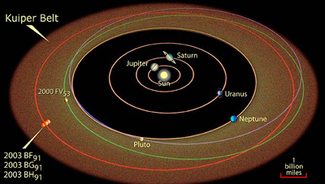

Named in honour of Gerard Kuiper, one of the first people to posit its existence, the Kuiper Belt is a belt of icy bodies confined to the plane of the Solar System extending beyond the orbit of Neptune. The Kupiter Belt was thought to be the reservoir of the short period comets.
The existence of the Kuiper Belt was confirmed in 1992 with the discovery of the first Kuiper Belt Object (KBO). Since then, almost 1,000 more KBOs have been discovered, with the largest having diameters equivalent to or greater than that of Pluto. Indeed, since the discovery of large Kuiper Belt Objects, it is now understood that Pluto is not a planet but rather it is one of the large KBOs that populate the outer regions of the Solar System.
Current theories have the Kuiper Belt forming along with the rest of the Solar System, though it is still a matter of debate whether it formed in place or was pushed out to its present position as Neptune migrated outwards. If it did form in situ, then the region has clearly been heavily depleted, since it contains less than 1% of the mass needed to build the large ice giant planets.

Credit: NASA and A. Feild (STScI)
The KBOs discovered to date have perihelia of less than 50 AU. This suggests that there is a distinct outer edge to the Kuiper Belt at 50 AU, an unexpected observation based on theories of how the Kuiper Belt formed. It is currently thought that this abrupt truncation of the Kuiper Belt at 50 AU marks the maximum distance that objects were transported by Neptune’s migration.
Beyond the Kuiper Belt are scattered disk objects, which have eccentric orbits that take them much further from the Sun. It is now beleived that the short-period Jupiter family comets and Halley-type comets originate from this scattered disk beyond the Kuiper Belt, while the long-period comets have their home much further out in the Oort cloud.